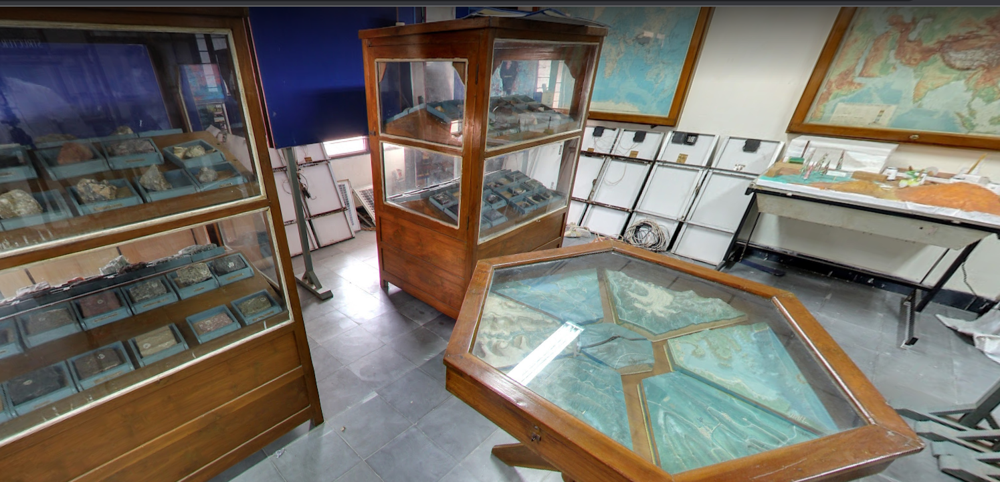
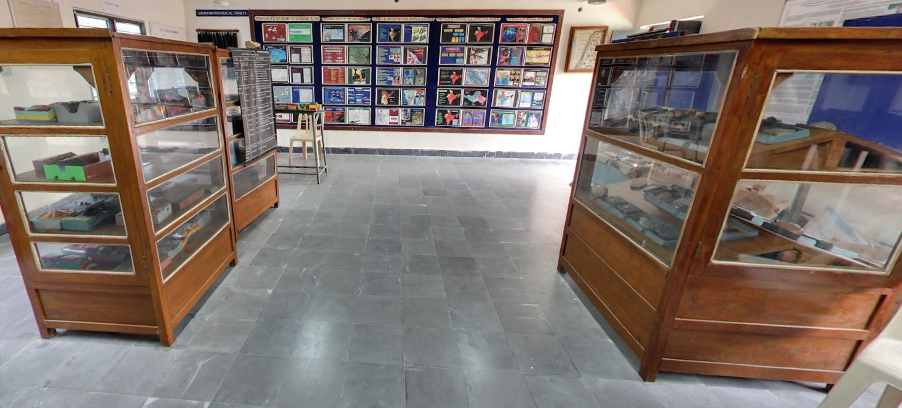

WATER AND ENVIRONMENT TECHNOLOGY (WET) RESEARCH CENTRE
Water and Environment Technology (WET) Research Centre was inaugurated on 5th February, 2010 in the Department of Civil Engineering by Major General Dr. R. Shiva Kumar, Head, NRDMS Division, DST, New Delhi with financial support from Department of Science and Technology and the institutional funds of S.R.K.R. Engineering College, Bhimavaram. It focuses on water quality, emerging contaminants and technology for water treatment. The primary mission is Research and Development (R&D) in advanced water and environment remediation systems and to strive to be a core research centre that conducts practical as well as pioneering research. We are employing innovative techniques by integrating basic sciences such as Chemistry, Geology, Hydrology and Microbial Ecology, with practical sciences, such as water process engineering. We are pursuing academic and practical research to meet societal demands through collaborations with researchers at other organisations, who are responsible for administrative action and process management. The physical, chemical and biological contaminants are getting introduced into drinking water systems / sources such as tanks and canals resulting in adversely affecting the water quality in our coastal deltaic environment. The existing rampant dynamics in landuse practices and the intensive application of fertilisers and pesticides are further deteriorating the water quality and posing a potential or actual threat to human health and the environment. The pathogens and other biological entities are causing serious / chronic health hazards. The above facts / results are in concurrence with the information from public health engineers and medical practitioners in the area. Also, the drastic depletion of discharges in canals and drains and the resulting salt water intrusion further complicates the drinking water quality / quantity and the associated environmental, ecological and socio-economic systems. Further, the WET Research Centre focuses on the state of the art technology for wastewater treatment and distribution.
The WET Research Centre’s vision is to further increase the understanding and awareness on the status of water quality for drinking, industrial, and agricultural needs to benefit the entire bio-flock in the area and also to provide authentic scientific information on the degradation of soils and its impacts on crop yields in the coastal environment. The mission of the Water & Environment Technology (WET) Research Centre is to develop and apply technologies to understand, analyse, mitigate and/or control biological and physico-chemical emerging contaminants in the environment as well as other contaminants that can adversely impact water quality. Furthermore, it focuses on soil quality and mapping and monitoring of environmentally and ecologically fragile zones using integrated geospatial and conventional technologies.

AREAS OF RESEARCH
- Drinking water – Analysis and treatment technologies
- Wastewater / Contaminants – Analysis and treatment technologies
- Industrial Contamination
- Potable water security and distribution
- Application of Probiotics
- Real-Time Monitoring of Microbial Contaminants in water Distribution Systems
- Transport and Dispersion of Contaminants in Water Distribution Systems
- Detection and intervention of vulnerable tap water via customer surveillance and enhanced Water Quality Monitoring
- Mapping and change detection of environmental and ecosystems degradation